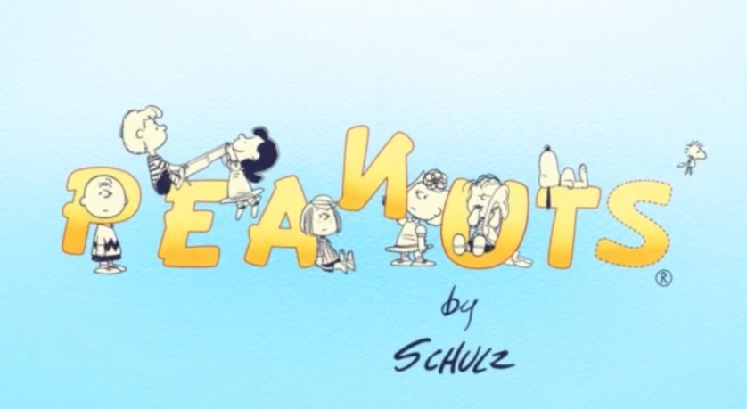

")
 
 IMDB-Wertung: 7.3 / 10
IMDB-Wertung: 7.3 / 10  Metascore:
Metascore: 
Twenty animated shorts bundled into ten episodes based on the art and writings of Charles Schulz. Each episode is taken from actual comic strips that Schulz created in the year 1964. Episodes range from stories about Christmas and Halloween, to school elections, baseball games in the summer, and Valentine Day crushes.
Jahr: 2008
Dauer: undefiniert Minuten
FSK:
Land: Kanada Studio: Warner Premiere DigitalTonspuren:
Untertitel:
Auflösung: SD (640x480) Größe: 128000 MB
Genre: Animation/Trick, TV-Serie
Regisseur: Brad Gibson, Jayson Thiessen
Drehbuch: Craig Hawes
Soundtrack:
Darsteller:
 Alex Ferris als Charlie Brown
Alex Ferris als Charlie BrownDatei: X:\Kinder Serien\Peanuts\DVD01\01 Feuer in den Augen.avi seit 02.06.2016
Festplatte: Kinder-Filme+Trick
 Es gibt insgesamt 56 Filme in der Gruppe 'Kinder Serien'
Es gibt insgesamt 56 Filme in der Gruppe 'Kinder Serien'